Accumulated Local Effect (ALE)
(Feature Influence)
Method Overview
Explanation Synopsis
ALE captures the influence of a specific feature value on the model’s prediction by quantifying the average (accumulated) difference between the predictions at the boundaries of a (small) fixed interval around the selected feature value (Apley and Zhu 2020). It is calculated by replacing the value of the explained feature with the interval boundaries for instances found in the designated data set whose value of this feature is within the specified range.
It communicates global (with respect to the entire explained model) feature influence.
Rationale
ALE is an evolved version of (relaxed) Marginal Effect (ME) (Apley and Zhu 2020) that is less prone to being affected by feature correlation since it relies upon average prediction change. It also improves upon Partial Dependence (PD) (Friedman 2001) by ensuring that the influence estimates are based on realistic instances (thus respecting interactions between features / feature correlation), making the explanatory insights more truthful.
Toy Example – Numerical Feature
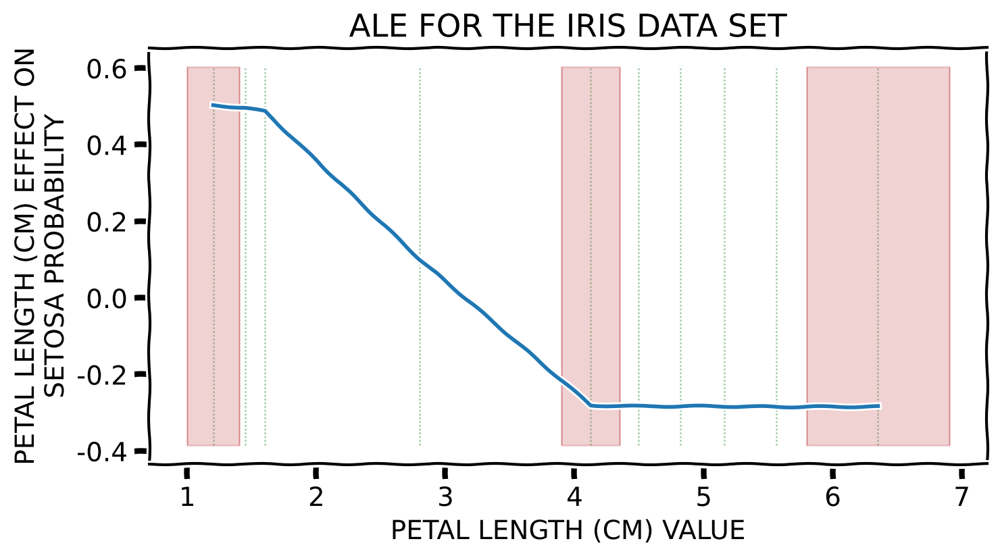Method Properties
| Property | Accumulated Local Effect |
|---|---|
| relation | post-hoc |
| compatibility | model-agnostic |
| modelling | regression and probabilistic classification (numbers) |
| scope | global (per data set; generalises to cohort) |
| target | model (set of predictions) |
Method Properties
| Property | Accumulated Local Effect |
|---|---|
| data | tabular |
| features | numerical (ordinal categorical) |
| explanation | feature influence (visualisation) |
| caveats | feature binning |
(Algorithmic) Building Blocks
Computing ALE
Input
Select a feature to explain
Select the explanation target
- probabilistic classifiers → (probabilities of) one class
- regressors → numerical values
Select a collection of instances to generate the explanation
Computing ALE
Parameters
Define binning of the explained (numerical) feature
- select the number of bins
- decide on fixed-width, quantile or custom binning
Computing ALE
Procedure
- For each instance in the designated data set, assign it to a bin that spans the range to which the value of its explained feature belongs
Computing ALE
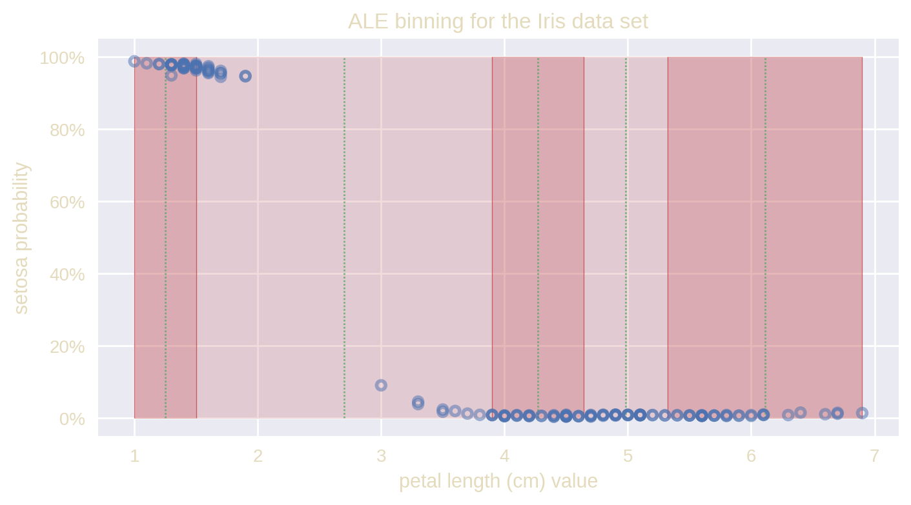Computing ALE
Procedure
- For each instance in each bin, calculate the difference between the prediction of these instances at bin boundaries
Computing ALE
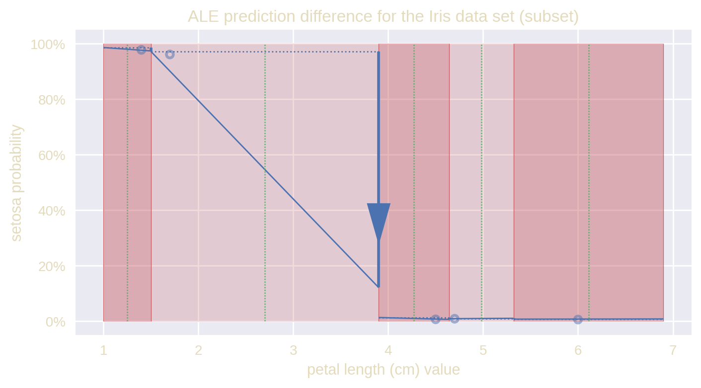Computing ALE
Procedure
- Calculate the mean change in prediction for each bin
Computing ALE
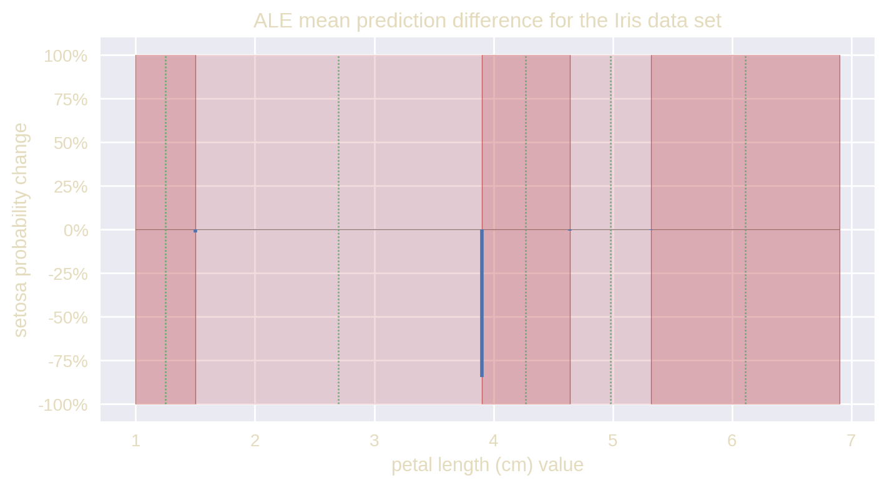Computing ALE
Procedure
- Accumulate the mean change in prediction over the bins
Computing ALE
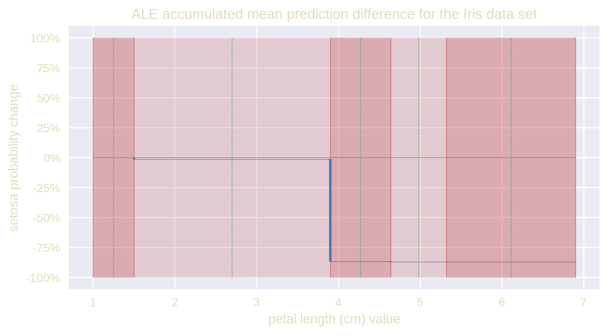Computing ALE
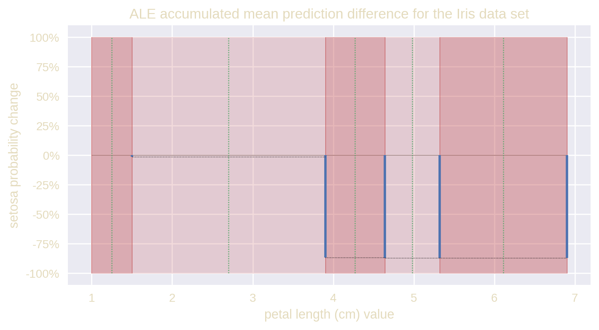Computing ALE
Procedure
- Extrapolate the value of the accumulated mean change in prediction in the middle of each bin
Computing ALE
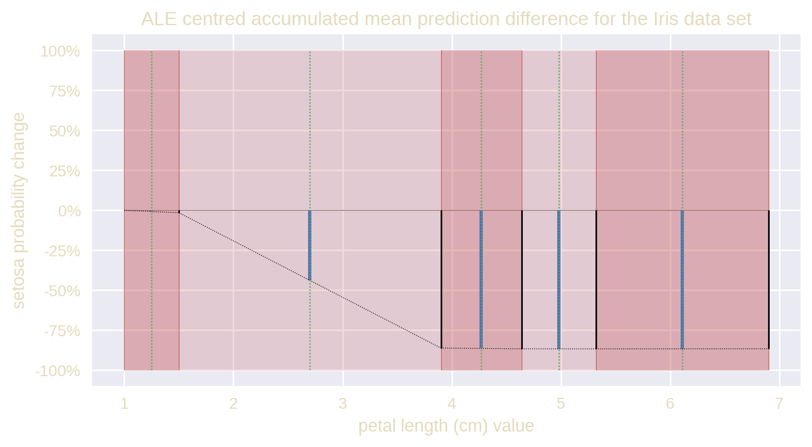Computing ALE
Procedure
- Centre (the extrapolated value of) the accumulated mean change in prediction in the middle of each bin around their mean
Depending on the binning strategy, the number of instances per bin may be distributed unevenly. A histogram representing the number of instances in each bin can help in interpreting the explanation.
Computing ALE
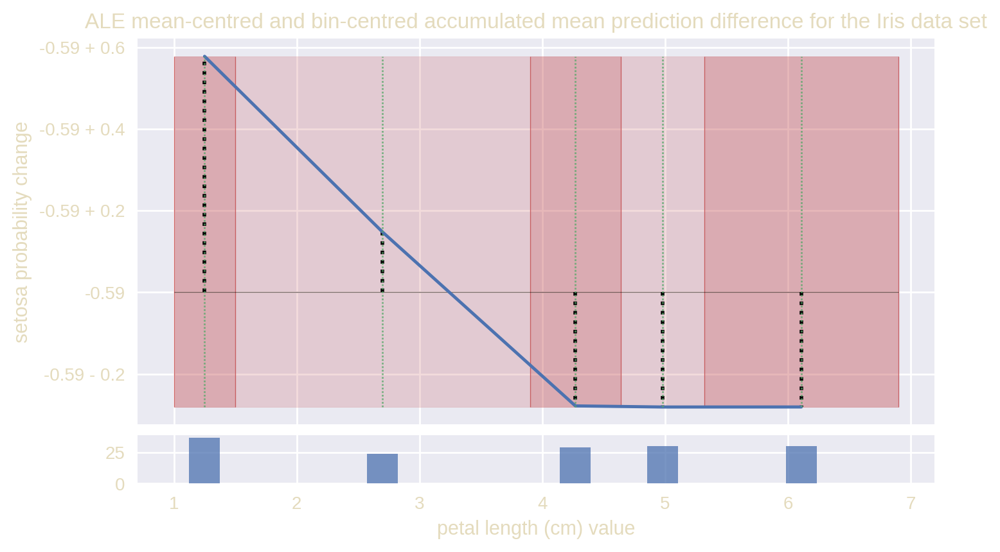Theoretical Underpinning
Formulation
\[ X_{\mathit{ALE}} \subseteq \mathcal{X} \]
\[ V_i = \{ x_i : x \in X_{\mathit{ALE}} \} \]
\[ \mathit{ALE}_i = \int_{v_{0}}^{x_i} \mathbb{E}_{X_{\setminus i} | X_{i}=x_i} \left[ f^i \left( X_{\setminus i} , X_{i} \right) | X_{i}=v_i \right] \; d v_i - \mathit{const} \\ \;\;\;\;\;\;\;\;\;\;\;\;\;\;\;\;= \int_{v_{0}}^{x_i} \left ( \int_{X_{\setminus i}} f^i \left( X_{\setminus i} , v_i \right) \; d \mathbb{P} ( X_{\setminus i} | X_i = v_i ) \right ) \; d v_i - \mathit{const} \]
\[ f^i (x_{\setminus i}, x_i) = \frac{\partial f (x_{\setminus i}, x_i)}{\partial x_i} \]
Formulation
Based on the ICE notation (Goldstein et al. 2015)
\[ \hat{f}_S = \int_{z_{0, S}}^{x_S} \mathbb{E}_{X_{C} | X_S = x_S} \left[ \hat{f}^{S} \left( X_{S} , X_{C} \right) | X_S = z_S \right] \; d z_{S} - \mathit{const} \\ \;\;\;\;\;\;\;\;= \int_{z_{0, S}}^{x_S} \left ( \int_{X_C} \hat{f}^{S} \left( z_{S} , X_{C} \right) \; d \mathbb{P} ( X_{C} | X_S = z_S ) \right ) \; d z_{S} - \mathit{const} \]
\[ \hat{f}^{S} (x_s, x_c) = \frac{\partial \hat{f} (x_S, x_C)}{\partial x_S} \]
Approximation
\[ \mathit{ALE}_i^{j} \approx \sum_{n=1}^{j} \frac{1}{|Z_n|} \sum_{x \in Z_n} \left[ f \left( x_{\setminus i} , x_i=Z_n^+ \right) - f \left( x_{\setminus i} , x_i=Z_n^- \right) \right] \]
\[ \overline{\mathit{ALE}_i^{j}} = \mathit{ALE}_i^{j} - \frac{1}{\sum_{Z_n \in Z} |Z_n|} \sum_{x \in Z} \mathit{ALE}_i(x) \]
Variants
Feature Binning Approaches
Given the need for binning, various approaches such as:
- quantile,
- equal-width or
- custom.
can be used.
(Examples to follow.)
Multi-dimensional ALE
ALE of a single feature captures only the effect of this particular feature on the explained model’s predictive behaviour – known as first-order effect. ALE of multiple features capture the exclusive effect of the interaction between n features on the explained model’s predictive behaviour (adjusted for the overall effect as well as the main effect of each feature) – known as nth-order effect, e.g., second-order effect.
(Examples to follow.)
Formulation
Refer to Apley and Zhu (2020) for the formulation.
Multi-dimensional ALE
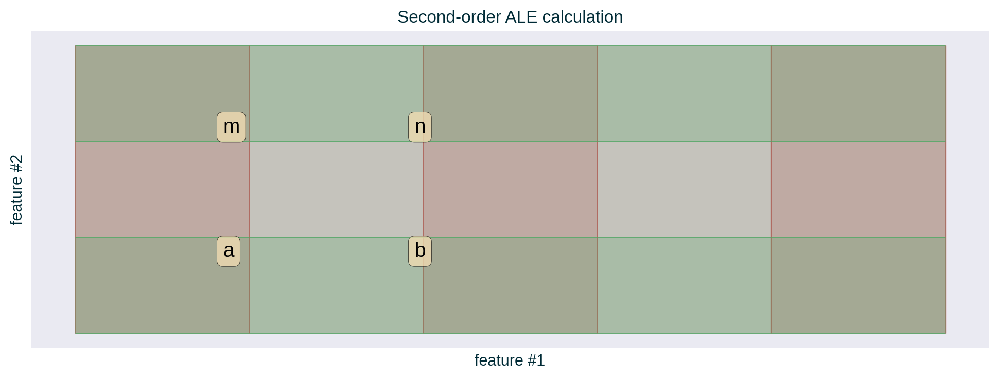Computation
\[ \underbrace{ \overbrace{(n - m)}^{\text{feature #1}} - \overbrace{(b - a)}^{\text{feature #1}} }_{\text{feature #2}} \]
Examples
ALE
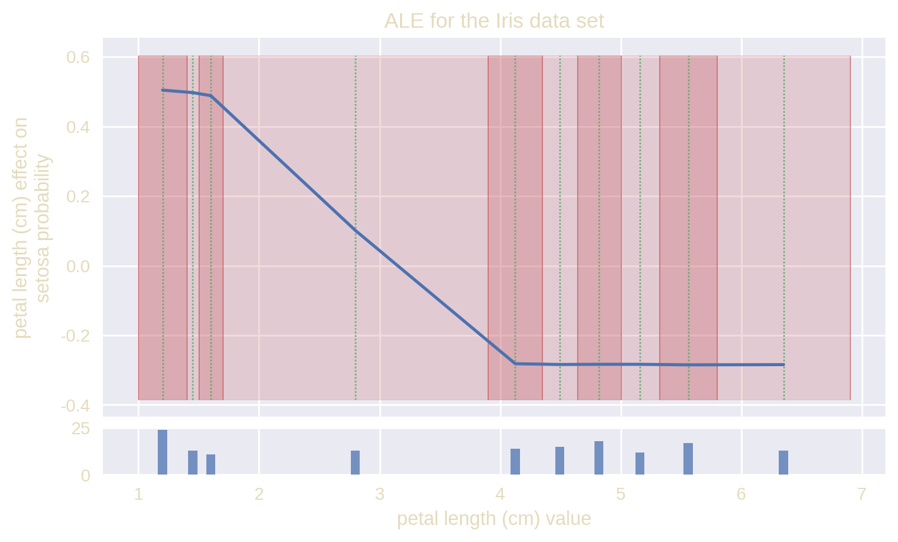ALE with Standard Deviation
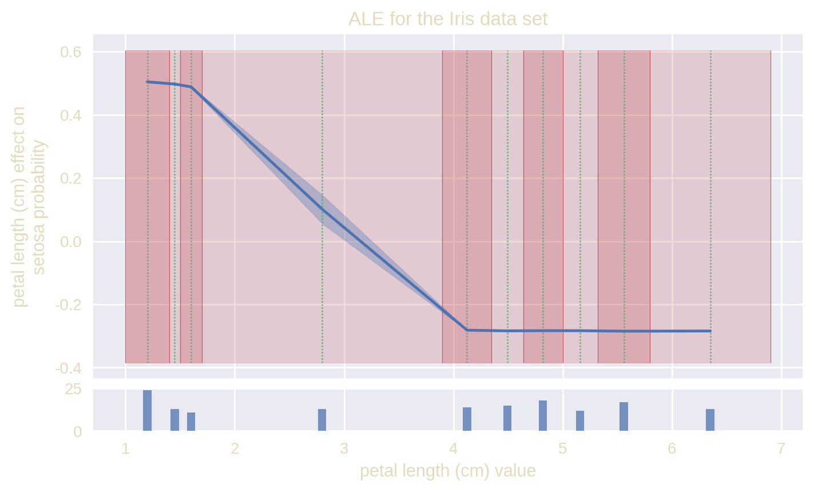Uniform Binning ALE (with Standard Deviation)
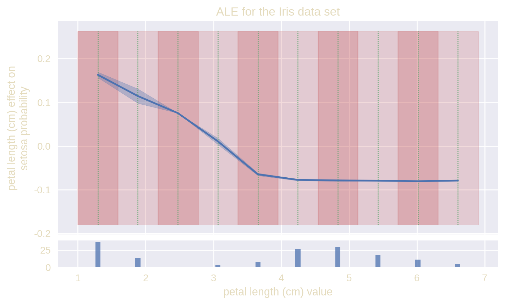ALE for Two Features
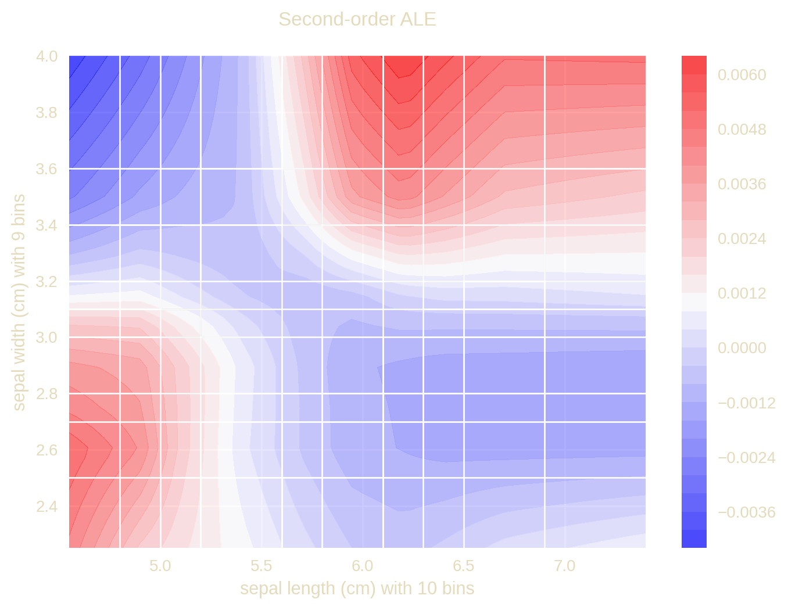Case Studies & Gotchas!
Feature Correlation
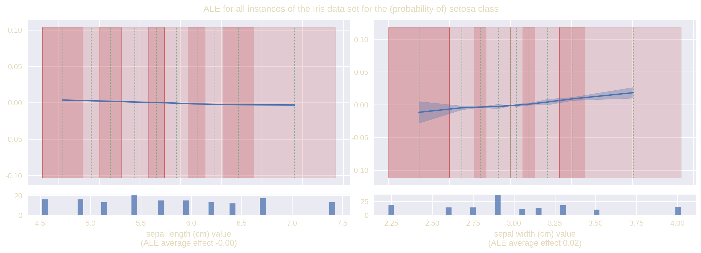Feature Correlation
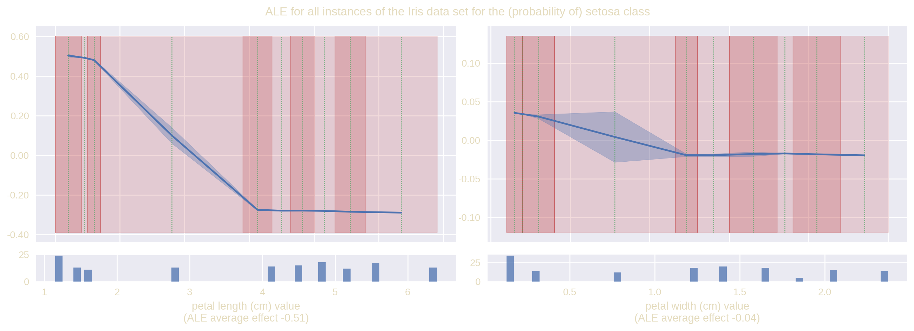Feature Correlation
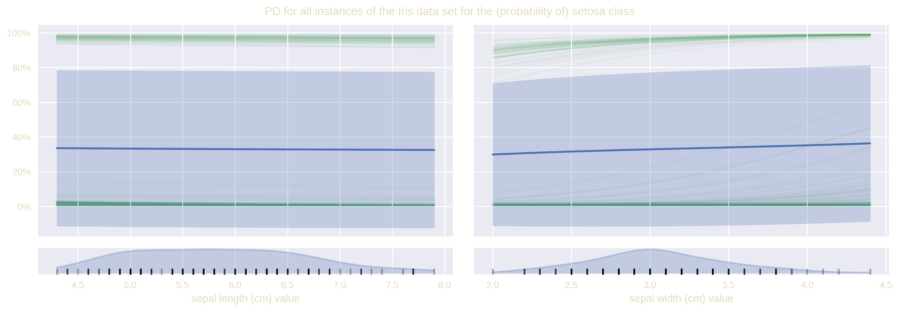Feature Correlation
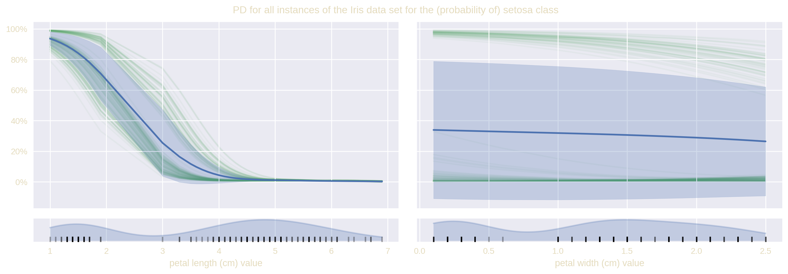Feature Correlation

ALE and Linear Model Coefficients
See Grömping (2020) for an explanation why ALE may not reflect the coefficients of a linear model.
Feature Correlation

Feature Correlation
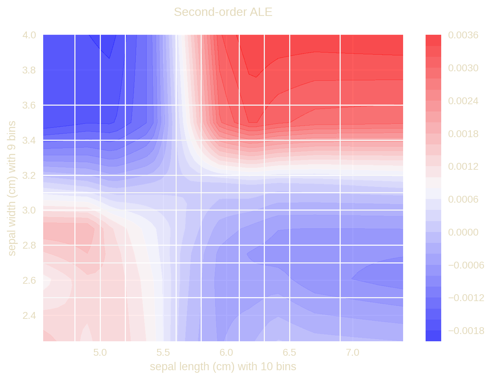Feature Correlation
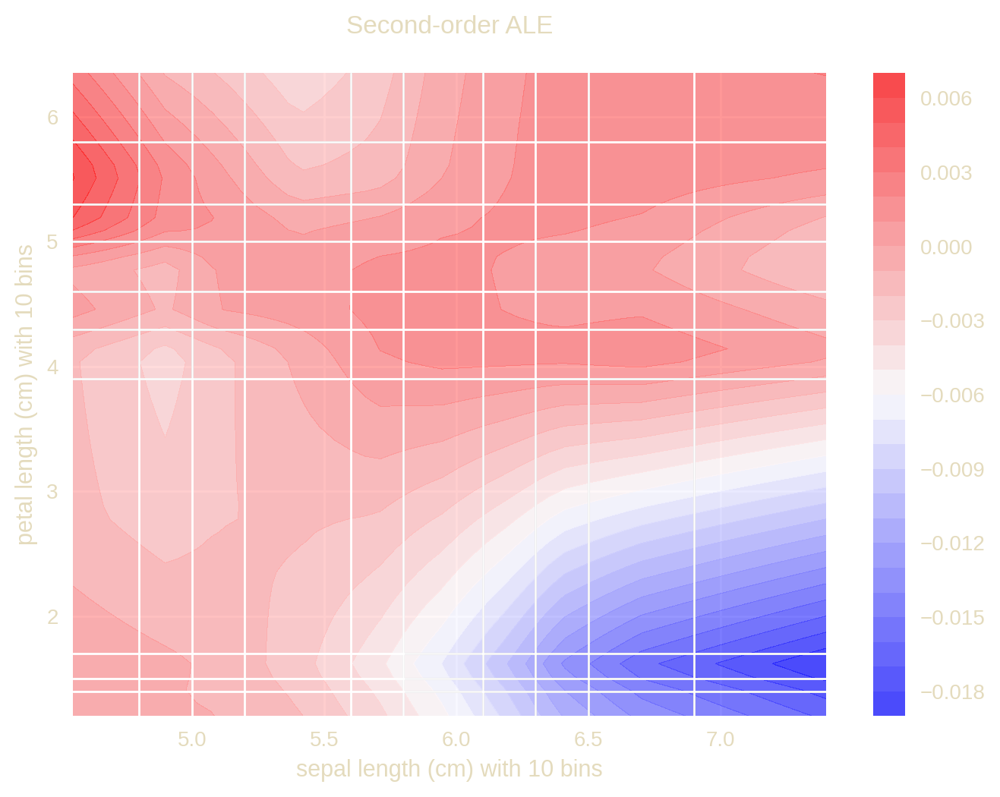Feature Correlation
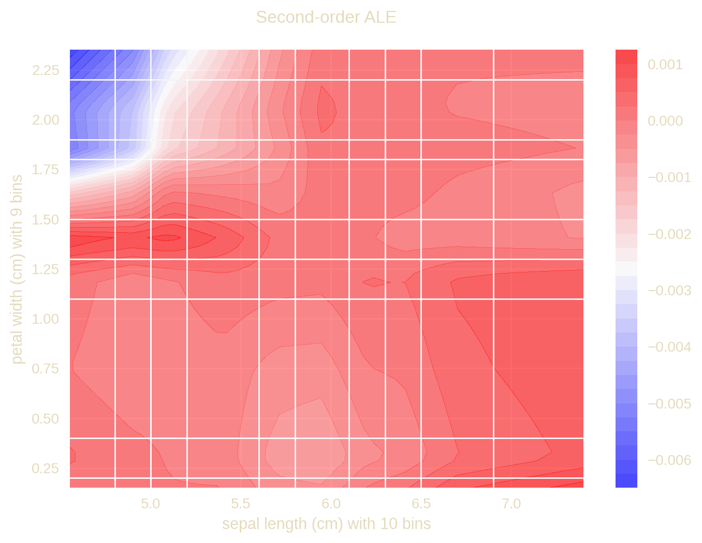Feature Correlation
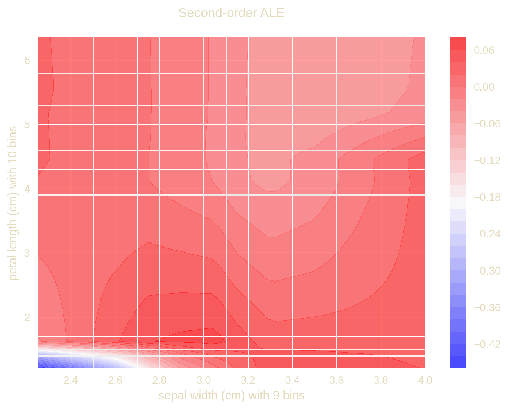Feature Correlation
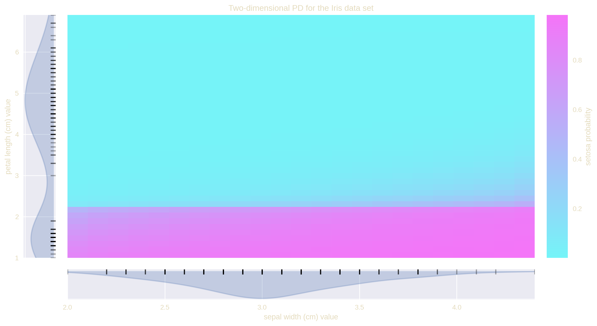Feature Correlation
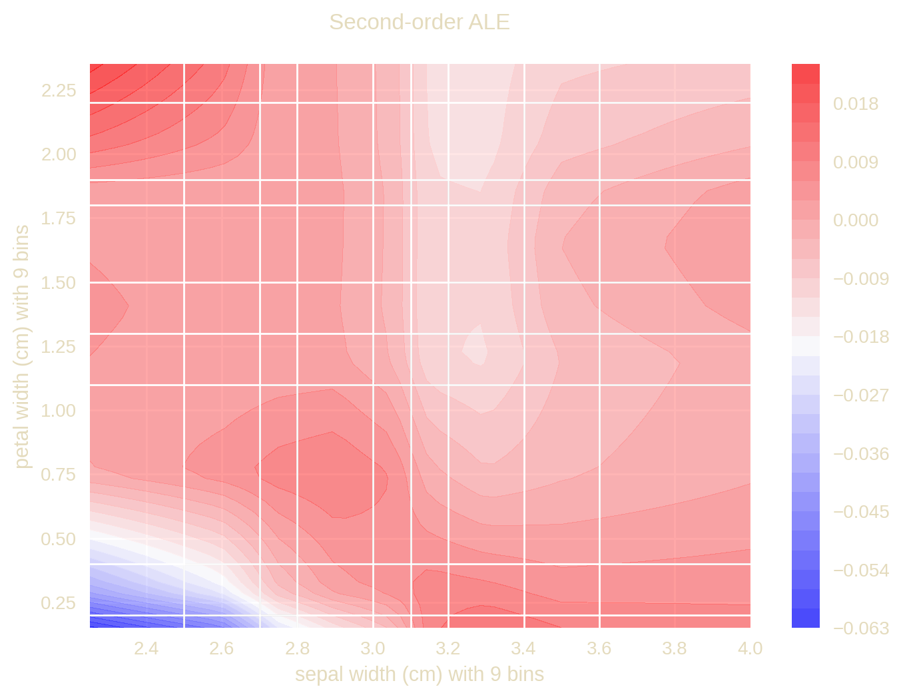Feature Correlation
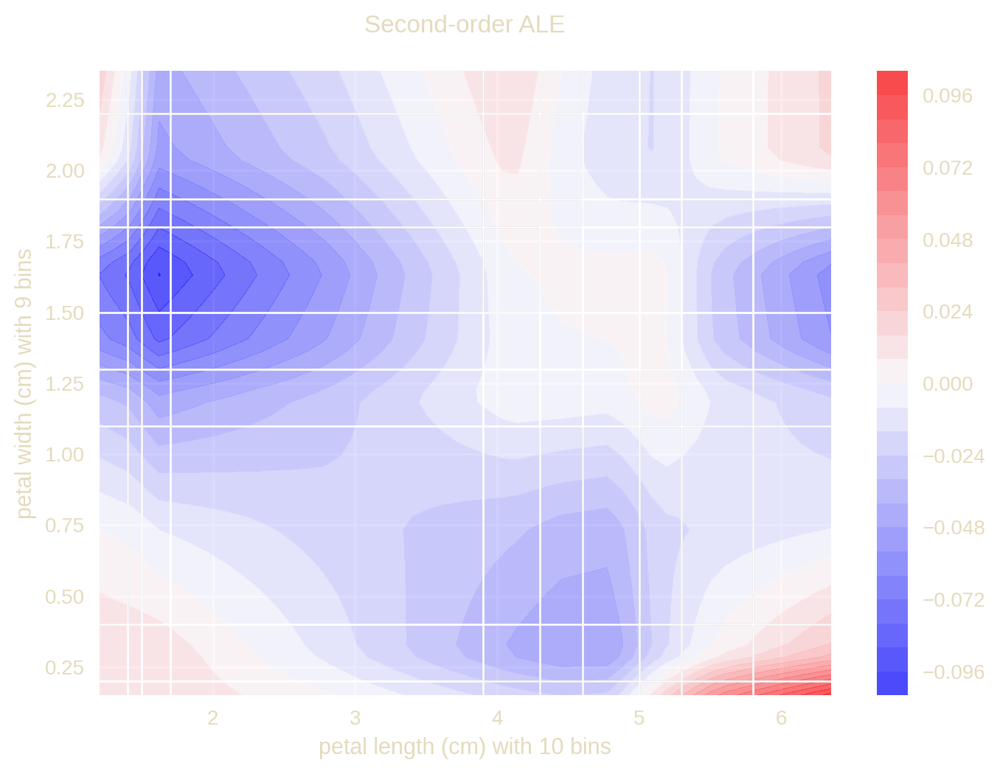Properties
Pros
Easy and fast to generate
Reasonably easy to interpret (first-order ALE)
Reliable when features are correlated (unbiased)
Based on data that are closely distributed to the real data
Cons
Not so easy to implement
Tricky to interpret for orders higher than first
Limited to explaining two feature at a time
ALE trends should not be generalised to individual instances across the feature range since the estimates are specific to each bin
Cons
Binning may skew the results (aided by displaying distribution of instances per bin); e.g.,
- quantiles ensure good estimates given the number of instances per bin, but may yield unusually long and short bins;
- fixed-width offers regular bins, but some may lack a sufficient number of points to offer reliable estimates
Caveats
- The measurements may be sensitive to different binning approaches
- Computational complexity: \(\mathcal{O} \left( n \right)\), where \(n\) is the number of instances in the designated data set
Further Considerations
Related Techniques
Marginal Effect (ME)
ME captures the average response of a predictive model across a collection of instances (taken from a designated data set) for a specific value of a selected feature (found in the aforementioned data set) (Apley and Zhu 2020). When relaxed by including similar feature values determined by a fixed interval around the selected value, this method offers similar insights to ALE: average prediction per interval instead of (accumulated) difference in prediction per interval.
Related Techniques
Individual Conditional Expectation (ICE)
It communicates the influence of a specific feature value on the model’s prediction by fixing the value of this feature across a designated range for a selected data point (Goldstein et al. 2015). It is an instance-focused (local) “variant” of Partial Dependence.
Related Techniques
Partial Dependence (PD)
It communicates the average influence of a specific feature value on the model’s prediction by fixing the value of this feature across a designated range for a set of instances. It is a model-focused (global) “variant” of Individual Conditional Expectation, which is calculated by averaging ICE across a collection of data points (Friedman 2001).
Implementations
| Python | R |
|---|---|
| ALEPython | ALEPlot |
| alibi | DALEX |
| iml |